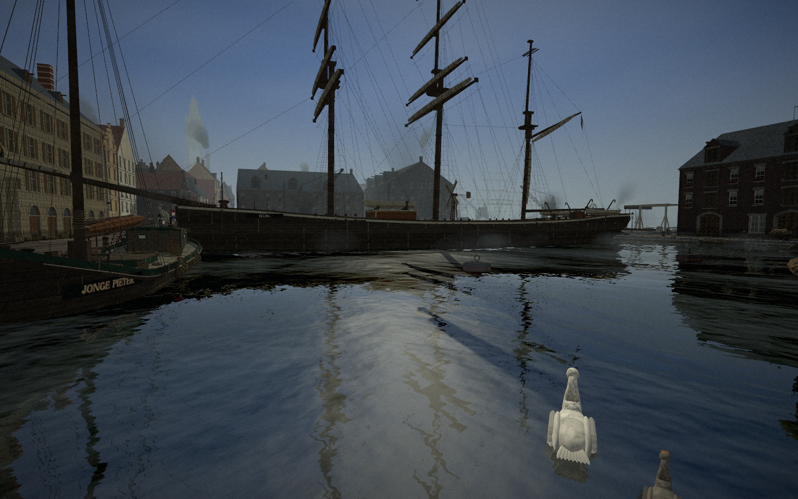
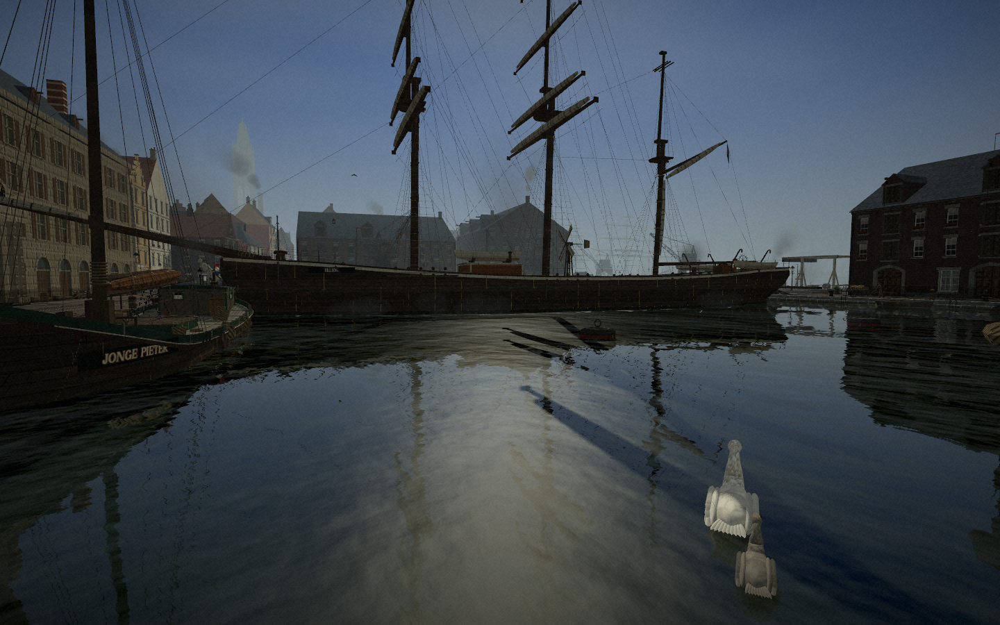
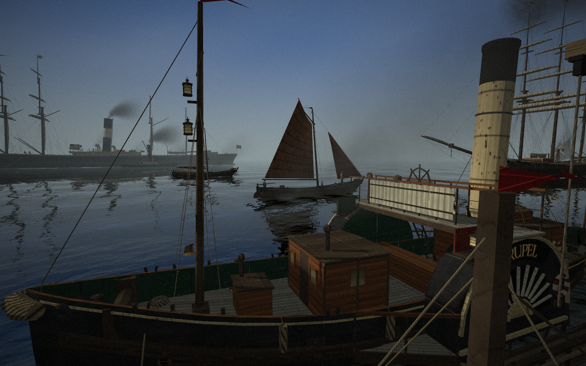
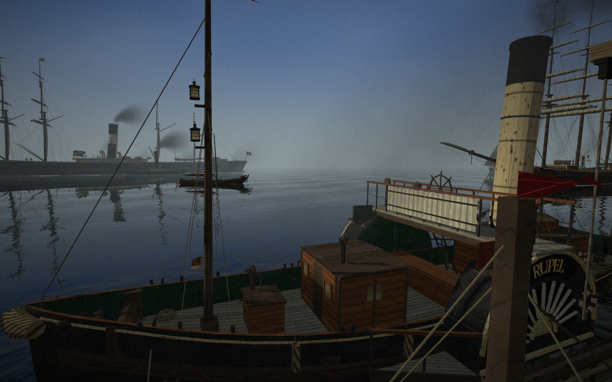
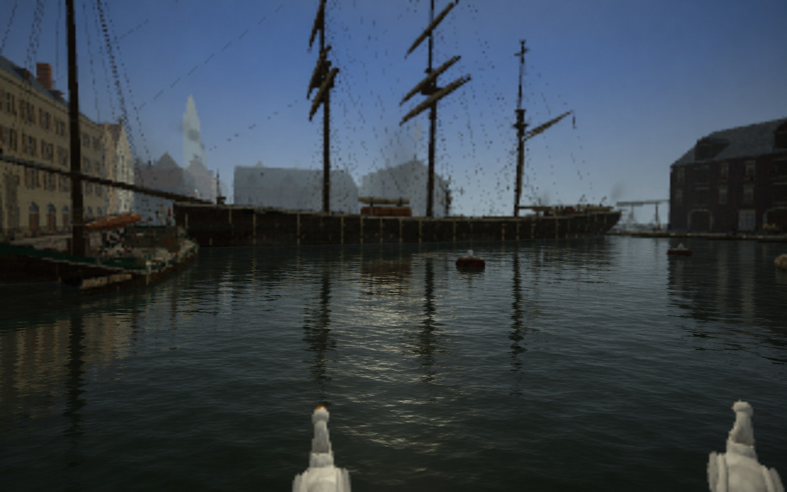

Docks · native Godot, daylight


Schelde · native Godot, daylight



High quality, full reflections. Moving boats and birds can differ between captures. Entrance wall cuts were disabled for this water review.